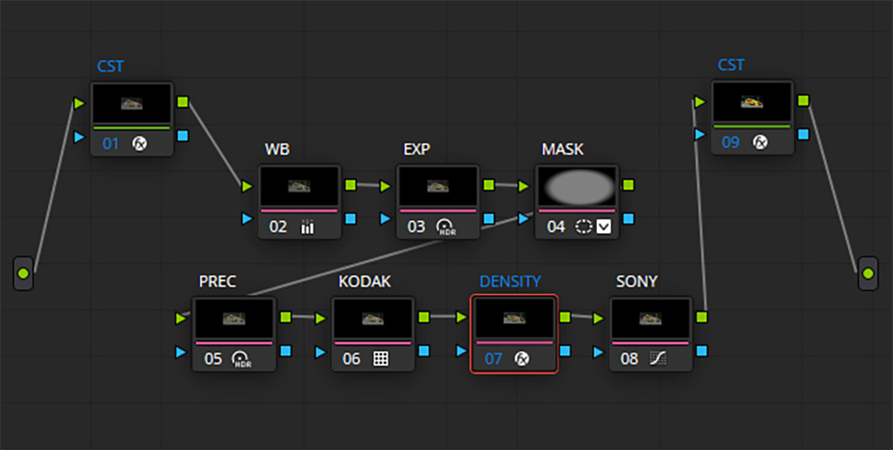
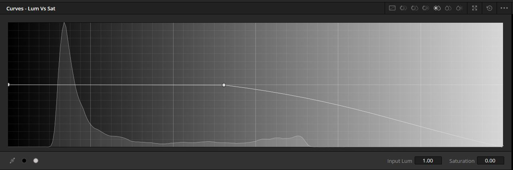

the grade
A breakdown of the simple and effective node structure I use when colour grading footage in Davinci Resolve.
1. colour management
Use a colour space transform (CST) to convert your input footage into your working colour space. in my case, this is from S-Log3 to Davinci Wide Gamut (DWG).
2. white balance
Correct the white balance in the image.
3. exposure
Make exposure adjustments to the image. I use the Global Exposure slider in the HDR tab. You can also make some contrast adjustments here.
This one often gets missed. Remember to set the correct colour space and gamma in your HDR tab, so Davinci knows how to adjust the exposure in a natural way. In my case, this is DWG. If you're working in S-Log3, it should be S-Log3.

4. mask (optional)
Sometimes I add a subtle vignette to the image. Again using the HDR exposure tools, with the correct Colour Space and Gamma set.
5. pre-contrast (optional)
This depends on the characteristics of your creative look or film print LUT (which comes in the following step). The Kodak film print that I use is high-contrast, so I reduce the contrast in this LUT in preparation, so the final result is not too crunchy. I use the contrast slider in the HDR tab. Again, use the correct Colour Space and Gamma.
6. film print
This is the core of your 'look'. I use a Kodak 2383 film emulation LUT, which accepts an input in DWG, and outputs in DWG.
7. density
Add filmic saturation to the image, increasing the vibrance while keeping the colours dark and rich (dense). The best method for this is a technique called subtractive saturation. There are many ways to achieve this (some paid and some free - don't waste your money). If you have the Davinci Film Look Creator, use the Subtractive Sat slider there.
8. sony (optional)
This node deals with some of the issues I commonly see with Sony footage. The primary correction is to gradually reduce the saturation of the lighter parts of the image. This is done using the Lum vs. Sat curve, by adding a gentle slope downwards.
9. colour management
Use a CST to convert your working footage to your output colour space, this will usually be Rec.709.
And there you have it! No gatekeeping, no ads, no waffle. If you found this useful, a like or follow on my instagram would be much appreciated :)
examples